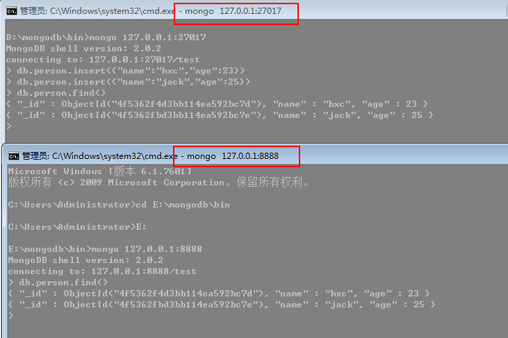

从这一篇开始我们主要讨论mongodb的部署技术。
我们知道sql server能够做到读写分离，双机热备份和集群部署，当然mongodb也能做到，实际应用中我们不希望数据库采用单点部署，
如果碰到数据库宕机或者被毁灭性破坏那是多么的糟糕。
一：主从复制
1： 首先看看模型图
2: 从上面的图形中我们可以分析出这种架构有如下的好处：
<1> 数据备份。
<2> 数据恢复。
<3> 读写分离。
3：下面我们就一一实践
实际应用中我们肯定是多服务器部署，限于自己懒的装虚拟机，就在一台机器上实践了。
第一步：我们把mongodb文件夹放在D盘和E盘，模拟放在多服务器上。
第二步：启动D盘上的mongodb，把该数据库指定为主数据库，其实命令很简单：>mongodb --dbpath='XXX' --master，
端口还是默认的27017.
第三步：同样的方式启动E盘上的mongodb，指定该数据库为从属数据库，命令也很简单，当然我们要换一个端口，比如：8888。
source 表示主数据库的地址。
>mongod --dbpath=xxxx --port=8888 --slave --source=127.0.0.1:27017
第四步：从图中的红色区域我们发现了一条：“applied 1 operations"这样的语句，并且发生的时间相隔10s，也就说明从属数据库每10s
就向主数据库同步数据，同步依据也就是寻找主数据库的”OpLog“日志，可以在图中红色区域内发现”sync_pullOpLog“字样。
接下来我们要做的就是测试，惊讶的发现数据已经同步更新，爽啊。

4： 如果我还想增加一台从属数据库，但是我不想在启动时就指定，而是后期指定，那么mongodb可否做的到呢？答案肯定是可以的。
我们的主或者从属数据库中都有一个叫做local的集合，主要是用于存放内部复制信息。
好，那么我们就试一下，我在F盘再拷贝一份mongodb的运行程序，cmd窗口好多啊，大家不要搞乱了。
看上面的log，提示没有主数据库，没关系，某一天我们良心发现，给他后期补贴一下，哈哈，再开一个cmd窗口，语句也就是
在sources中add一个host地址，最后发现数据也同步到127.0.0.1:5555这台从属数据库中....
5: 读写分离
这种手段在大一点的架构中都有实现，在mongodb中其实很简单，在默认的情况下，从属数据库不支持数据的读取，但是没关系，
在驱动中给我们提供了一个叫做“slaveOkay"来让我们可以显示的读取从属数据库来减轻主数据库的性能压力，这里就不演示了。
二：副本集
这个也是很牛X的主从集群，不过跟上面的集群还是有两点区别的。
<1>: 该集群没有特定的主数据库。
<2>: 如果哪个主数据库宕机了，集群中就会推选出一个从属数据库作为主数据库顶上，这就具备了自动故障恢复功能，很牛X的啊。
好，我们现在就来试一下，首先把所有的cmd窗口关掉重新来，清掉db下的所有文件。
第一步: 既然我们要建立集群，就得取个集群名字，这里就取我们的公司名shopex, --replSet表示让服务器知道shopex下还有其他数据库，
这里就把D盘里面的mongodb程序打开，端口为2222。指定端口为3333是shopex集群下的另一个数据库服务器。
第二步: 既然上面说3333是另一个数据库服务器，不要急，现在就来开，这里把E盘的mongodb程序打开。
第三步： ok，看看上面的日志红色区域，似乎我们还没有做完，是的，log信息告诉我们要初始化一下“副本集“，既然日志这么说，那我也就
这么做，随便连接一下哪个服务器都行，不过一定要进入admin集合。
第四步： 开启成功后，我们要看看谁才能成为主数据库服务器，可以看到端口为2222的已经成为主数据库服务器。
第五步：我们知道sql server里面有一个叫做仲裁服务器，那么mongodb中也是有的，跟sql server一样，仲裁只参与投票选举，这里我们
把F盘的mongodb作为仲裁服务器，然后指定shopex集群中的任一个服务器端口，这里就指定2222。
然后我们在admin集合中使用rs.addArb()追加即可。
追加好了之后，我们使用rs.status()来查看下集群中的服务器状态，图中我们可以清楚的看到谁是主，还是从，还是仲裁。
不是说该集群有自动故障恢复吗？那么我们就可以来试一下，在2222端口的cmd服务器按Ctrl+C来KO掉该服务器，立马我们发现
在3333端口的从属服务器即可顶上，最后大家也可以再次使用rs.status()来看下集群中服务器的状态。